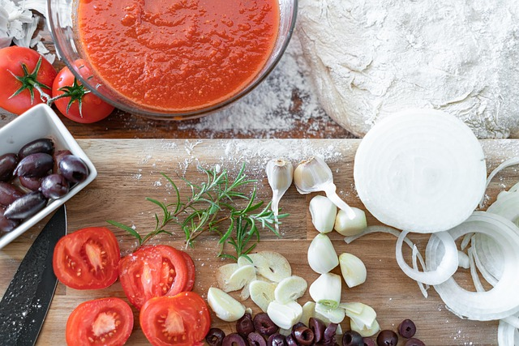

The DishPizza is a dish that is flexible to your taste buds, with basically any food able to be a topping. You create a dough that is spun into a circle and laid out to be covered in pizza sauce and mozzarella cheese. Once it has the toppings of your choosing, it is put in an oven to be baked to perfection. Pizza has a high overall score of 8/9, falling short of a perfect score. |
 |
Taste RatingThe taste of pizza all depends on the toppings and the person's preference. Because you can change the pizza entirely to your liking, it scores an automatic 3/3. Pizza's flexibility in flavor to cater to anyone's taste buds makes it a top favorite food. |

|
Texture RatingThe texture of pizza has a soft but strong crust that is easy to bite into. The cheese, sauce, and toppings always come together in each bite to make each bite worth it. The stringy cheese that comes with each bite makes it satisfying to eat. The only issue you run into is that sometimes the pizza crust is too soft, and all the cheese and toppings slide off the pizza. Because of that one flaw, I am giving pizza a 2/3. |

|
Presentation RatingThe presentation of pizza is consistent and almost guaranteed every time it is shown to you. It is a round pie with cheese and the toppings of your choosing, presented neatly and pre-cut. You can see every part of the pizza and see all the ingredients mixed. I give it a score of 3/3 for its nostalgic and consistent presentation. |
|